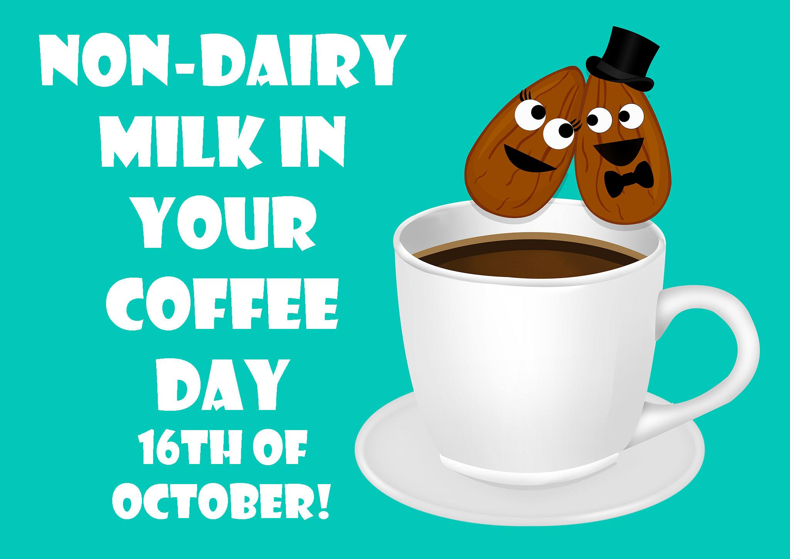

Who We Are
The Adelaide Vegan website was established in 2017. Part of the reasoning behind creating this space is the lack of information regarding veganism in South Australia. Having said this, those that visit this site who are new to veganism (or how are thinking of become a vegan) will also be able to find a wealth of information about this cruelty free style of living including:- What veganism is
- The health benefits of a plant based diet
- Delicious recipies
- Where vegans can eat in Adelaide
Our Aims
We hope to influence, inspire and support people to embrace and maintain a vegan lifestyle. We are an independent, non-profit organization staffed by volunteers. We work entirely for free and do not accept donations from any organisations (vegan or otherwise) and therefore you can be certain that the information this site contains is non-biased (apart from the fact that we totally support a vegan way of living). We have only just started up and therefore we are one of the youngest vegan organisations in the world. We are based in Adealide, South Australia and can be contacted via Facebook, Instagram and Snapchat.What is a Vegan?
A vegan (pronounced VEE-gun) is someone who chooses to avoid using or consuming animal products. While vegetarians choose not use flesh foods, vegans also avoid diary, eggs and honey, as well as fur, leather, wool, down and cosmetics or chemical products tested on animals.External Links
Upcoming Events

World Vegan Day
Non-Diary Day

Vegan Festival

Vegan Halloween